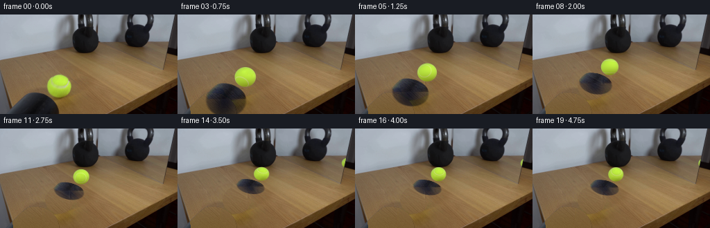
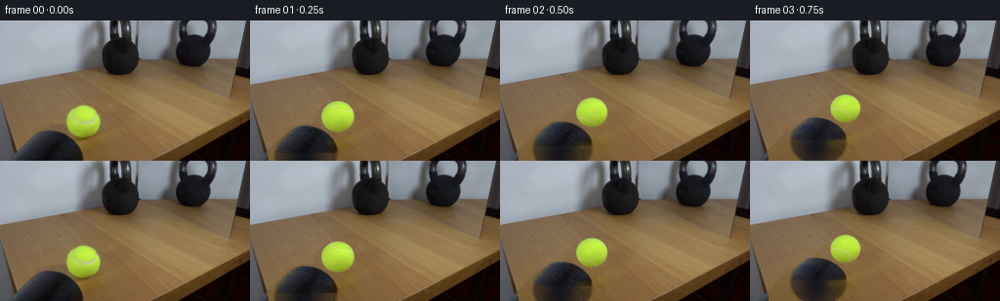
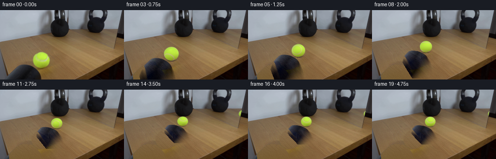
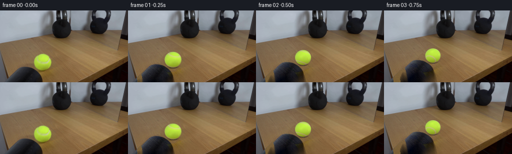
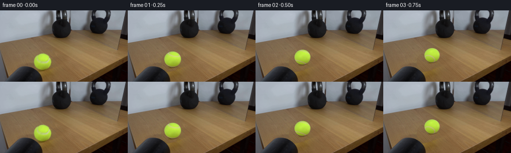

CODING AGENTS AS PIXEL WORLD MODELS
traex/GPT-6.1-Sol · 0156
点击播放 · 原生 RGB 像素
逐轮保存的候选
回放视频、检查图与代码变化。
每份候选均可单独播放。实际图片检查记录在下方工具轨迹中。
候选 01播放与检查图
点击播放 · 原生 RGB 像素


展开代码变化
--- 上一保存版本
+++ 本次保存版本
@@ -0,0 +1,184 @@
+from pathlib import Path
+import numpy as np
+from PIL import Image
+from scipy.ndimage import gaussian_filter, map_coordinates
+import cv2
+import artifact_io
+
+ROOT=Path(__file__).resolve().parent
+H,W=144,256
+SOURCE=np.array(Image.open(ROOT/'first_frame.png').convert('RGB'),dtype=np.float64)
+Y,X=np.mgrid[:H,:W]
+CX,CY,RX,RY=85.25,103.05,17.7,16.65
+
+def fit_field():
+ x=(X-85)/80.; y=(Y-103)/50.
+ A=np.stack([np.ones_like(x),x,y,x*x,x*y,y*y,y**3],axis=-1)
+ r,g,b=SOURCE.transpose(2,0,1)
+ clean=(X>13)&(X<156)&(Y>65)&(r-g>17)&(g-b>19)
+ clean&=~((X>65)&(X<106)&(Y>84)&(Y<124))
+ clean&=~((X<88)&(Y>110)&(X>18))
+ a=A[clean]; z=SOURCE[clean]; weight=np.ones(len(z))
+ for _ in range(7):
+ c=np.linalg.lstsq(a*weight[:,None],z*weight[:,None],rcond=None)[0]
+ err=np.sqrt(np.mean((a@c-z)**2,axis=1))
+ weight=np.minimum(1,3/np.maximum(err,.01))
+ field=A@c
+ # Reuse fine wood grain without repeating any objects.
+ donor_x=110+((X+19)%40)
+ donor=SOURCE[Y,donor_x]-field[Y,donor_x]
+ grain=donor-gaussian_filter(donor,(2,2,0))
+ return np.clip(field+grain,0,255),field
+
+WOOD,WOOD_SMOOTH=fit_field()
+# Ball's cast shadow: extract the observed colour changes, extending only the
+# cropped portion of the same ellipse below the lower image boundary.
+EH=208
+sy,sx=np.mgrid[:EH,:W]
+shadow_xcenter=53-(sy-114)*.12
+rho=((sx-shadow_xcenter)/36)**2+((sy-148)/35.5)**2
+edge=np.clip((1-rho)*5,0,1)
+core=np.exp(-(((sx-(52-.21*(sy-120)))/22)**2+((sy-148)/39)**2))
+strength=edge*(.43+.57*core)
+# Ambient illumination in the shadow is cool and much dimmer than direct light.
+model_delta=strength[:,:,None]*(np.array([18,19,24])-np.pad(WOOD_SMOOTH,((0,EH-H),(0,0),(0,0)),mode='edge'))
+ball_region=((X-CX)/19)**2+((Y-CY)/18)**2<1.15
+shadow_region=(Y>105)&(X>14)&(X<109)&~ball_region
+actual_delta=SOURCE-WOOD
+# Suppress accidental grain effects outside the cast shadow itself.
+valid=(SOURCE[:,:,0]-SOURCE[:,:,1]<15)&(Y>=111)&(X>Y*.18-7)&(X<89)
+actual_gate=np.clip((WOOD.mean(2)-SOURCE.mean(2)-3)/14,0,1)
+gate=gaussian_filter((valid*actual_gate).astype(float),.55)
+# Use the whole observed shadow where it differs significantly from the table.
+footshadow=np.exp(-(((X-85)/16)**2+((Y-121)/4)**2))*.34
+broad=np.exp(-(((X-64)/28)**2+((Y-115)/10)**2))*.10
+observed=np.minimum(actual_delta,0)
+gate=np.maximum(gate,np.clip((footshadow+broad)*2,0,1))
+gate*=shadow_region
+layer=model_delta.copy()
+# Match observed shadow precisely; use analytic continuation under ball/border.
+use=(shadow_region)&(X>Y*.18-7)
+layer[:H][use]=observed[use]*np.maximum(gate[use],edge[:H][use])[:,None]
+# Prevent a seam at the cropped edge when the continuation becomes visible.
+for yy in range(137,H):
+ a=(yy-137)/7*.4
+ layer[yy]=(1-a)*layer[yy]+a*model_delta[yy]
+# Base scene: remove only tennis ball and its mobile shadow.
+BASE=SOURCE.copy()
+removal=np.clip(-layer[:H].mean(2)/8,0,1)
+removal*=((X>Y*.18-7)&(X<110)&(Y>104))
+removal[ball_region]=1
+BASE=SOURCE*(1-removal[:,:,None])+WOOD*removal[:,:,None]
+# Source fitted sphere lighting and material texture.
+nx=(X-CX)/RX; ny=-(Y-CY)/RY
+rr=nx*nx+ny*ny
+nz=np.sqrt(np.maximum(0,1-rr))
+features=np.stack([np.ones_like(nx),nx,ny,nz,nx*ny,ny*ny,nx*nx,ny*nz,nx*nz],-1)
+valid=(rr<.90)&(SOURCE[:,:,1]>SOURCE[:,:,0]*1.05)&(SOURCE[:,:,2]<94)
+coef=np.linalg.lstsq(features[valid],SOURCE[valid],rcond=None)[0]
+for _ in range(5):
+ e=features[valid]@coef-SOURCE[valid]
+ w=np.minimum(1,4/np.maximum(np.sqrt((e*e).mean(1)),.01))
+ coef=np.linalg.lstsq(features[valid]*w[:,None],SOURCE[valid]*w[:,None],rcond=None)[0]
+residual=SOURCE-features@coef
+residual=np.clip(residual,-7,7)
+residual[~valid]=0
+residual=gaussian_filter(residual,(.35,.35,0))
+normal=np.array([.142,.638,.757]);normal/=np.linalg.norm(normal)
+# Camera-space rotation about the horizontal axis perpendicular to travel.
+axis=np.array([-.958,.205,-.200]);axis/=np.linalg.norm(axis)
+
+def rot(v,angle):
+ return v*np.cos(angle)+np.cross(axis,v)*np.sin(angle)+np.sum(v*axis,axis=-1)[...,None]*axis*(1-np.cos(angle))
+
+rng=np.random.default_rng(333)
+noise=rng.normal(0,1.35,(H*3,W*3,3))
+
+def sphere(canvas,cx,cy,rx,ry,angle,reflection=False,squash=1):
+ # Threefold supersampling preserves thin fuzzy white seams during rolling.
+ x0=max(0,int(cx-rx-2));x1=min(W,int(cx+rx+3))
+ y0=max(0,int(cy-ry-2));y1=min(H,int(cy+ry+3))
+ if x1<=x0 or y1<=y0:return canvas
+ ss=3
+ yy,xx=np.mgrid[y0*ss:y1*ss,x0*ss:x1*ss]/ss+(1/ss-.5)/2
+ a=(xx-cx)/rx;b=-(yy-cy)/ry;rad=a*a+b*b
+ z=np.sqrt(np.maximum(0,1-rad))
+ v=np.stack([a,b,z],-1)
+ obj=rot(v,-angle)
+ if reflection:obj[...,0]*=-1
+ dot=np.sum(obj*normal,-1)
+ # Two lobes of the pale stitched seam on the felt shell.
+ seamdist=np.minimum(np.abs(dot-.731),np.abs(dot+.731))
+ seam=np.exp(-.5*(seamdist/.019)**2)
+ # Match the narrow, slightly irregular felt seam seen in the source.
+ feat=np.stack([np.ones_like(a),a,b,z,a*b,b*b,a*a,b*z,a*z],-1)
+ color=feat@coef
+ coords=np.array([CY-obj[...,1]*RY,CX+obj[...,0]*RX])
+ tex=np.stack([map_coordinates(residual[:,:,k],coords,order=1,mode='nearest') for k in range(3)],-1)
+ tex*=np.clip(obj[...,2]*4,0,1)[...,None]
+ color+=tex
+ color+=seam[...,None]*np.array([24,-3,66])
+ # Cloth fibres remain low amplitude instead of becoming plastic smooth.
+ color+=noise[y0*ss:y1*ss,x0*ss:x1*ss]*.5
+ alpha=np.clip((1-rad)*rx*ss*.55+.5,0,1)
+ if reflection:
+ color=color*.87+np.array([4,6,9])
+ # Mirror quadrilateral, right edge runs diagonally down-left.
+ mirror=(xx>139+(yy/39)*3)&(yy<39+(xx-142)*.174)&(xx<253-yy*.237)
+ alpha*=mirror
+ rgba=np.concatenate([color*alpha[...,None],alpha[...,None]],-1)
+ avg=rgba.reshape(y1-y0,ss,x1-x0,ss,4).mean((1,3))
+ out=canvas.copy()
+ out[y0:y1,x0:x1]=out[y0:y1,x0:x1]*(1-avg[:,:,3:])+avg[:,:,:3]
+ return out
+
+def motion(t):
+ hit=3.45
+ if t<=hit:
+ # Constant world velocity with weak rolling resistance.
+ u=(t-.035*t*t)/(hit-.035*hit*hit)
+ else:
+ # Small dissipative rebound; the 30 lb bell does not visibly move.
+ tau=t-hit
+ u=1-.052*(1-np.exp(-tau/0.30))
+ return np.clip(u,0,1)
+
+frames=[]
+for i in range(20):
+ if i==0:
+ frames.append(SOURCE.astype(np.uint8));continue
+ t=i/4;u=motion(t)
+ k=.64*u; horiz=31.52*u
+ # Analytic planar projective translation of the shadow along the tabletop.
+ D=1-k*(Y-5)/115
+ oldy=5+(Y-5)/np.maximum(D,.1)
+ ratio=(oldy-5)/115
+ oldx=128+(X-128)*(1+k*ratio)-horiz*ratio
+ shifted=np.stack([map_coordinates(layer[:,:,ch],[oldy,oldx],order=1,mode='constant',cval=0) for ch in range(3)],-1)
+ floor_mask=np.clip((X-(Y*.18-8)-1)*.8,0,1)
+ floor_mask*=np.clip((Y-(66-X*.21))*2,0,1)
+ frame=BASE+shifted*floor_mask[:,:,None]
+ denom=1+k
+ cx=128+(-42.75+horiz)/denom
+ gy=5+115/denom
+ rx=RX/denom;ry=RY/denom
+ cy=gy-ry
+ angle=6.5*u
+ # Reflection remains behind the glass; most starts outside its right edge.
+ f=150.;depth=f/rx
+ p=np.array([(cx-128)*depth/f,depth])
+ n=np.array([.949,.315]);n/=np.linalg.norm(n)
+ d=11.84
+ virt=p+2*(d-n@p)*n
+ vcx=128+f*virt[0]/virt[1]
+ vgy=5+1000/virt[1]
+ vr=f/virt[1]
+ frame=sphere(frame,vcx,vgy-vr,vr,vr*.941,angle,True)
+ # Brief soft compression upon impact, under one millimetre in the scene.
+ compress=.027*np.exp(-((t-3.50)/.13)**2)
+ frame=sphere(frame,cx,cy+ry*compress,rx*(1+compress),ry*(1-compress),angle)
+ frames.append(np.clip(np.rint(frame),0,255).astype(np.uint8))
+frames=np.stack(frames)
+artifact_io.save(frames,ROOT)
+if __name__=='__main__':
+ print('Saved',frames.shape,'RGB frames; first frame exact:',np.array_equal(frames[0],SOURCE.astype(np.uint8)))
候选 02播放与检查图
点击播放 · 原生 RGB 像素


展开代码变化
--- 上一保存版本
+++ 本次保存版本
@@ -31,44 +31,40 @@
return np.clip(field+grain,0,255),field
WOOD,WOOD_SMOOTH=fit_field()
-# Ball's cast shadow: extract the observed colour changes, extending only the
-# cropped portion of the same ellipse below the lower image boundary.
-EH=208
+# The original elongated shadow is extended analytically beyond the bottom of
+# the image; its observed portion is retained with its exact colour and texture.
+EH=260
sy,sx=np.mgrid[:EH,:W]
-shadow_xcenter=53-(sy-114)*.12
-rho=((sx-shadow_xcenter)/36)**2+((sy-148)/35.5)**2
-edge=np.clip((1-rho)*5,0,1)
-core=np.exp(-(((sx-(52-.21*(sy-120)))/22)**2+((sy-148)/39)**2))
-strength=edge*(.43+.57*core)
-# Ambient illumination in the shadow is cool and much dimmer than direct light.
-model_delta=strength[:,:,None]*(np.array([18,19,24])-np.pad(WOOD_SMOOTH,((0,EH-H),(0,0),(0,0)),mode='edge'))
+ex,ey,ea,eb,eth=34.067331,220.,51.176872,111.579741,.235262
+dx=sx-ex;dy=sy-ey
+rho=((dx*np.cos(eth)+dy*np.sin(eth))/ea)**2+((-dx*np.sin(eth)+dy*np.cos(eth))/eb)**2
+rim=np.clip((1-rho)*8,0,1)**.295124
+cx,cy,aa,bb,th,amp=0.,215.678,23.0095,118.998,.675639,1.29937
+dx=sx-cx;dy=sy-cy
+core=np.exp(-.5*(((dx*np.cos(th)+dy*np.sin(th))/aa)**2+((-dx*np.sin(th)+dy*np.cos(th))/bb)**2))
+strength=rim*np.clip(amp*core,0,1)
ball_region=((X-CX)/19)**2+((Y-CY)/18)**2<1.15
-shadow_region=(Y>105)&(X>14)&(X<109)&~ball_region
-actual_delta=SOURCE-WOOD
-# Suppress accidental grain effects outside the cast shadow itself.
-valid=(SOURCE[:,:,0]-SOURCE[:,:,1]<15)&(Y>=111)&(X>Y*.18-7)&(X<89)
-actual_gate=np.clip((WOOD.mean(2)-SOURCE.mean(2)-3)/14,0,1)
-gate=gaussian_filter((valid*actual_gate).astype(float),.55)
-# Use the whole observed shadow where it differs significantly from the table.
-footshadow=np.exp(-(((X-85)/16)**2+((Y-121)/4)**2))*.34
-broad=np.exp(-(((X-64)/28)**2+((Y-115)/10)**2))*.10
-observed=np.minimum(actual_delta,0)
-gate=np.maximum(gate,np.clip((footshadow+broad)*2,0,1))
-gate*=shadow_region
-layer=model_delta.copy()
-# Match observed shadow precisely; use analytic continuation under ball/border.
-use=(shadow_region)&(X>Y*.18-7)
-layer[:H][use]=observed[use]*np.maximum(gate[use],edge[:H][use])[:,None]
-# Prevent a seam at the cropped edge when the continuation becomes visible.
-for yy in range(137,H):
- a=(yy-137)/7*.4
- layer[yy]=(1-a)*layer[yy]+a*model_delta[yy]
-# Base scene: remove only tennis ball and its mobile shadow.
+# Relight only pixels affected by the movable ball: no global frame changes.
BASE=SOURCE.copy()
-removal=np.clip(-layer[:H].mean(2)/8,0,1)
-removal*=((X>Y*.18-7)&(X<110)&(Y>104))
-removal[ball_region]=1
-BASE=SOURCE*(1-removal[:,:,None])+WOOD*removal[:,:,None]
+remove_shadow=(Y>105)&(X>Y*.18-7)&(X<108)
+attenuation=np.clip((WOOD.mean(2)-SOURCE.mean(2)-2)/10,0,1)*remove_shadow
+attenuation=np.maximum(attenuation,ball_region.astype(float))
+BASE=SOURCE*(1-attenuation[:,:,None])+WOOD*attenuation[:,:,None]
+observed=SOURCE-BASE
+# Under the sphere, fit a small physical contact shadow instead of its colour.
+contact=np.exp(-(((X-85.25)/16)**2+((Y-120)/3.1)**2))*.46
+secondary=np.exp(-(((X-66)/26)**2+((Y-115)/9)**2))*.085
+field_ext=np.pad(WOOD_SMOOTH,((0,EH-H),(0,0),(0,0)),mode='edge')
+layer=strength[:,:,None]*(np.array([9,9,12])-field_ext)
+layer[:H]=observed
+layer[:H][ball_region]=((contact+secondary)[:,:,None]*(np.array([15,16,20])-WOOD))[ball_region]
+# The numerical colour continuation is matched to the last observed row, avoiding
+# a horizontal discontinuity as formerly off-frame portions enter the picture.
+edge_err=gaussian_filter(observed[-1]-layer[H],(1.2,0))
+for yy in range(H,EH):
+ layer[yy]+=edge_err*np.exp(-(yy-H)/28)
+# A trace of extra ambient shadow around the contact point.
+layer[:H]+=secondary[:,:,None]*.20*(np.array([15,16,20])-WOOD)*ball_region[:,:,None]
# Source fitted sphere lighting and material texture.
nx=(X-CX)/RX; ny=-(Y-CY)/RY
rr=nx*nx+ny*ny
@@ -84,7 +80,7 @@
residual=np.clip(residual,-7,7)
residual[~valid]=0
residual=gaussian_filter(residual,(.35,.35,0))
-normal=np.array([.142,.638,.757]);normal/=np.linalg.norm(normal)
+normal=np.array([.07856,.61450,.78500]);normal/=np.linalg.norm(normal)
# Camera-space rotation about the horizontal axis perpendicular to travel.
axis=np.array([-.958,.205,-.200]);axis/=np.linalg.norm(axis)
@@ -108,8 +104,8 @@
if reflection:obj[...,0]*=-1
dot=np.sum(obj*normal,-1)
# Two lobes of the pale stitched seam on the felt shell.
- seamdist=np.minimum(np.abs(dot-.731),np.abs(dot+.731))
- seam=np.exp(-.5*(seamdist/.019)**2)
+ seamdist=np.minimum(np.abs(dot-.71654),np.abs(dot+.71654))
+ seam=np.exp(-.5*(seamdist/.039)**2)
# Match the narrow, slightly irregular felt seam seen in the source.
feat=np.stack([np.ones_like(a),a,b,z,a*b,b*b,a*a,b*z,a*z],-1)
color=feat@coef
@@ -117,7 +113,7 @@
tex=np.stack([map_coordinates(residual[:,:,k],coords,order=1,mode='nearest') for k in range(3)],-1)
tex*=np.clip(obj[...,2]*4,0,1)[...,None]
color+=tex
- color+=seam[...,None]*np.array([24,-3,66])
+ color+=seam[...,None]*np.array([20,-24,65])
# Cloth fibres remain low amplitude instead of becoming plastic smooth.
color+=noise[y0*ss:y1*ss,x0*ss:x1*ss]*.5
alpha=np.clip((1-rad)*rx*ss*.55+.5,0,1)
候选 03播放与检查图
点击播放 · 原生 RGB 像素

展开代码变化
--- 上一保存版本
+++ 本次保存版本
@@ -31,40 +31,28 @@
return np.clip(field+grain,0,255),field
WOOD,WOOD_SMOOTH=fit_field()
-# The original elongated shadow is extended analytically beyond the bottom of
-# the image; its observed portion is retained with its exact colour and texture.
-EH=260
-sy,sx=np.mgrid[:EH,:W]
-ex,ey,ea,eb,eth=34.067331,220.,51.176872,111.579741,.235262
-dx=sx-ex;dy=sy-ey
-rho=((dx*np.cos(eth)+dy*np.sin(eth))/ea)**2+((-dx*np.sin(eth)+dy*np.cos(eth))/eb)**2
-rim=np.clip((1-rho)*8,0,1)**.295124
-cx,cy,aa,bb,th,amp=0.,215.678,23.0095,118.998,.675639,1.29937
-dx=sx-cx;dy=sy-cy
-core=np.exp(-.5*(((dx*np.cos(th)+dy*np.sin(th))/aa)**2+((-dx*np.sin(th)+dy*np.cos(th))/bb)**2))
-strength=rim*np.clip(amp*core,0,1)
-ball_region=((X-CX)/19)**2+((Y-CY)/18)**2<1.15
-# Relight only pixels affected by the movable ball: no global frame changes.
+# Remove the moving ball and its small warm contact shadow. The large cool
+# silhouette cast by the heavy iron bell on the near part of the table stays put.
+EH=220
+ball_region=((X-CX)/18.85)**2+((Y-CY)/17.85)**2<1.04
BASE=SOURCE.copy()
-remove_shadow=(Y>105)&(X>Y*.18-7)&(X<108)
-attenuation=np.clip((WOOD.mean(2)-SOURCE.mean(2)-2)/10,0,1)*remove_shadow
-attenuation=np.maximum(attenuation,ball_region.astype(float))
-BASE=SOURCE*(1-attenuation[:,:,None])+WOOD*attenuation[:,:,None]
-observed=SOURCE-BASE
-# Under the sphere, fit a small physical contact shadow instead of its colour.
-contact=np.exp(-(((X-85.25)/16)**2+((Y-120)/3.1)**2))*.46
-secondary=np.exp(-(((X-66)/26)**2+((Y-115)/9)**2))*.085
-field_ext=np.pad(WOOD_SMOOTH,((0,EH-H),(0,0),(0,0)),mode='edge')
-layer=strength[:,:,None]*(np.array([9,9,12])-field_ext)
-layer[:H]=observed
-layer[:H][ball_region]=((contact+secondary)[:,:,None]*(np.array([15,16,20])-WOOD))[ball_region]
-# The numerical colour continuation is matched to the last observed row, avoiding
-# a horizontal discontinuity as formerly off-frame portions enter the picture.
-edge_err=gaussian_filter(observed[-1]-layer[H],(1.2,0))
-for yy in range(H,EH):
- layer[yy]+=edge_err*np.exp(-(yy-H)/28)
-# A trace of extra ambient shadow around the contact point.
-layer[:H]+=secondary[:,:,None]*.20*(np.array([15,16,20])-WOOD)*ball_region[:,:,None]
+BASE[ball_region]=WOOD[ball_region]
+r,g,b=SOURCE.transpose(2,0,1)
+small_support=np.exp(-(((X-79)/29)**2+((Y-117)/7)**2))
+# Preserve the sharply outlined cool cast shadow of the stationary kettlebell.
+warm=(r-g>15)&(g-b>18)&(X>42)&(X<108)&(Y>103)&(Y<127)
+small_deficit=np.clip((WOOD.mean(2)-SOURCE.mean(2)-2)/9,0,1)
+remove=small_deficit*warm*np.clip(small_support*2,0,1)
+remove[ball_region]=0
+BASE=BASE*(1-remove[:,:,None])+WOOD*remove[:,:,None]
+layer=np.zeros((EH,W,3))
+layer[:H]=SOURCE-BASE
+layer[:H][ball_region]=0
+# Under the ball, continue the observed soft brown contact patch.
+contact=.42*np.exp(-(((X-84)/14.5)**2+((Y-120)/3.1)**2))
+broad=.08*np.exp(-(((X-65)/28)**2+((Y-114)/9)**2))
+under=(contact+broad)[:,:,None]*(np.array([31,26,13])-WOOD)
+layer[:H][ball_region]=under[ball_region]
# Source fitted sphere lighting and material texture.
nx=(X-CX)/RX; ny=-(Y-CY)/RY
rr=nx*nx+ny*ny
候选 04播放与检查图
点击播放 · 原生 RGB 像素

展开代码变化
--- 上一保存版本
+++ 本次保存版本
@@ -78,7 +78,7 @@
rng=np.random.default_rng(333)
noise=rng.normal(0,1.35,(H*3,W*3,3))
-def sphere(canvas,cx,cy,rx,ry,angle,reflection=False,squash=1):
+def sphere(canvas,cx,cy,rx,ry,angle,reflection=False,squash=1,blur_angle=0):
# Threefold supersampling preserves thin fuzzy white seams during rolling.
x0=max(0,int(cx-rx-2));x1=min(W,int(cx+rx+3))
y0=max(0,int(cy-ry-2));y1=min(H,int(cy+ry+3))
@@ -103,7 +103,7 @@
color+=tex
color+=seam[...,None]*np.array([20,-24,65])
# Cloth fibres remain low amplitude instead of becoming plastic smooth.
- color+=noise[y0*ss:y1*ss,x0*ss:x1*ss]*.5
+ color+=noise[y0*ss:y1*ss,x0*ss:x1*ss]*.4
alpha=np.clip((1-rad)*rx*ss*.55+.5,0,1)
if reflection:
color=color*.87+np.array([4,6,9])
候选 05播放与检查图
可观测工具轨迹
实际执行的命令与返回图片。
命令 1exit 0
/bin/bash -lc 'ls -la && cat prompt.txt && cat GENERATION_RULES.md'
命令 2exit 0
/bin/bash -lc "cat artifact_io.py && python - <<'PY'
from PIL import Image
import numpy as np
im=np.array(Image.open('first_frame.png'))
print(im.shape)
np.set_printoptions(linewidth=240)
# brightness ASCII
I=np.array(Image.fromarray(im).resize((128,72))).mean(2)
cs=' .:-=+*#%@'
for row in I: print(''.join(cs[min(9,int(v/256*10))] for v in row))
# green pixels coords
r,g,b=im.astype(float).transpose(2,0,1)
m=(g>r*1.03)&(g>b*1.2)&(g>75)
y,x=np.where(m); print('green',len(x), 'bounds',x.min(),x.max(),y.min(),y.max())
from scipy.ndimage import label,find_objects
l,n=label(m)
for sl in find_objects(l):
if sl is None: continue
area=m[sl].sum()
if area>8: print('cc',sl,area)
PY"命令 3exit 0
/bin/bash -lc "python - <<'PY'
from PIL import Image
import numpy as np
im=np.array(Image.open('first_frame.png'))
# print nearest representative color ascii 128x72
from scipy.cluster.vq import kmeans2
im2=np.array(Image.fromarray(im).resize((128,72)))
c,l=kmeans2(im2.reshape(-1,3).astype(float),12,minit='++',seed=8)
for i,x in enumerate(c): print(i,x)
# colour labels
chars='0123456789AB'
for row in l.reshape(72,128): print(''.join(chars[x] for x in row))
print('REGION BALL:')
a=im[80:127,58:111]
# green, cream seam, table, shadow
for y,row in enumerate(a):
s=''
for r,g,b in row.astype(float):
if g>r*1.05 and g>b*1.2: ch='G' if g>140 else 'g'
elif r>160 and g>150 and b>90: ch='S'
elif r>g*1.2: ch='T'
elif max(r,g,b)<35: ch=' '
else: ch='.'
s+=ch
print(f'{y+80:3}',s)
print('RGB landmarks')
for y in [0,10,20,40,50,60,70,80,100,120,140]:
print(y,[(x,im[y,x].tolist()) for x in range(0,256,10)])
PY"命令 4exit 0
/bin/bash -lc "python - <<'PY'
from PIL import Image
import numpy as np
im=np.array(Image.open('first_frame.png')).astype(float)
# first 64 y, x 76:256; ascii 1pixel x, 1pixel y
chars=' .,:-=+*#%@'
for y in range(0,64):
row=im[y,76:256]
st=''
for r,g,b in row:
if r>g+12 and g>b+12: st+='t'
else: st+=chars[min(9,int((r+g+b)/3/256*10))]
print('%02d'%y,st)
# Boundary of largest dark regions
from scipy.ndimage import label,find_objects
m=im.mean(2)<40
L,n=label(m)
for idx,s in enumerate(find_objects(L)):
if s is not None and (L[s]==idx+1).sum()>70:
print(s,(L[s]==idx+1).sum())
PY"命令 5exit 0
/bin/bash -lc "python - <<'PY'
from PIL import Image
import numpy as np
im=np.array(Image.open('first_frame.png'))
for y in range(80,122):
row=im[y]
m=(row[:,1]>row[:,0]*1.03)&(row[:,1]>row[:,2]*1.2)
x=np.where(m)[0]
if len(x):print(y,x.min(),x.max(), row[x.min()].tolist(), row[x.max()].tolist())
# luminance field near ball, table and cast shadow in original
for y in range(86,144,2):
print(y,' '.join('%3d'%im[y,x].mean() for x in range(12,113,3)))
# strongest horizontal/vertical edges
im=im.astype(float)
for y in [0,10,20,30,39,40,41,45,47,50,55,60]:
z=np.mean(np.abs(im[y,1:]-im[y,:-1]),axis=1)
inds=np.argsort(z)[-14:]
print(y, sorted([(int(x),round(z[x])) for x in inds]))
PY"命令 6exit 0
/bin/bash -lc "python - <<'PY'
from PIL import Image
import numpy as np
im=np.array(Image.open('first_frame.png')).astype(float)
for x0,x1 in [(100,147),(175,222)]:
print('crop',x0,x1)
for y in range(0,59):
vals=im[y,x0:x1].mean(1)
print('%02d'%y,''.join(' .,:-=+*#%@'[min(9,int(v/80*10))] for v in vals))
PY"命令 7exit 0
/bin/bash -lc "python - <<'PY'
import numpy as np
from PIL import Image
im=np.array(Image.open('first_frame.png'))
# detailed tabletop crop in RGB-class and gradient ascii
# RGB diff from overall wood expected
for y in range(40,144):
if y%2:continue
s=''
for x in range(0,256,2):
r,g,b=im[y,x].astype(float)
if g>r*1.03 and g>b*1.2 and g>75: ch='G'
elif b>r: ch='M' if r>80 else 'k'
elif r>g+15 and g>b+15: ch='t' if r>125 else 'w'
elif r<40:ch=' '
else:ch='.'
s+=ch
print(f'{y:3}',s)
PY"命令 8exit 0
/bin/bash -lc "python - <<'PY'
from PIL import Image
import numpy as np
from scipy.ndimage import gaussian_filter
im=np.array(Image.open('first_frame.png')).astype(float)
for y in range(86,121):
st=''
for x in range(65,105):
r,g,b=im[y,x]
if g-r<-10:ch=' '
elif b>100: ch='#' if b>120 else '+'
elif g>226:ch='H'
elif g>210:ch='g'
elif g>185:ch='='
elif g>155:ch='-'
else:ch='.'
st+=ch
print('%d'%y,st)
PY"命令 9exit 0
/bin/bash -lc "python - <<'PY' import importlib.util for x in ['numpy','PIL','scipy','cv2']: print(x,importlib.util.find_spec(x) is not None) PY"
命令 10exit 0
/bin/bash -lc "mkdir -p .tmp && python - <<'PY'
import numpy as np
p=np.array([[75,94],[76,98],[79,101],[83,103],[88,104.6],[93,103.8],[96,101.6],[99,97.]])
x=(p[:,0]-85.2)/17.7; y=-(p[:,1]-103.25)/16.8; z=np.sqrt(np.maximum(0,1-x*x-y*y));n=np.array([x,y,z]).T
u,s,v=np.linalg.svd(np.c_[n,np.ones(8)])
print(n,s,v[-1], np.c_[n,np.ones(8)]@v[-1])
# resolve fixed y coefficient
coef=np.linalg.lstsq(np.c_[x,z,np.ones(8)],-y,rcond=None)[0]; print('coef',coef)
PY"命令 11exit 0
/bin/bash -lc "cat > .tmp/analyze.py <<'PY'
import numpy as np
from PIL import Image
from scipy.ndimage import gaussian_filter
im=np.array(Image.open('first_frame.png')).astype(float)
y,x=np.mgrid[:144,:256]
X=(x-80)/80; Y=(y-100)/50
A=np.stack([np.ones_like(X),X,Y,X*X,X*Y,Y*Y,X**3,X*X*Y,X*Y*Y,Y**3],-1)
m=(x>8)&(x<160)&(y>68)&(x>.18*y-8)&~((x>65)&(x<106)&(y>84)&(y<123))&~((x<103)&(y>104))
# cast shad rejection by rgb
m &= (im[:,:,0]-im[:,:,1]>17)&(im[:,:,1]-im[:,:,2]>18)
w=np.ones(m.sum());a=A[m];z=im[m]
for _ in range(8):
c=np.linalg.lstsq(a*w[:,None],z*w[:,None],rcond=None)[0]
e=np.sqrt(np.mean((a@c-z)**2,axis=1));w=np.minimum(1,3/np.maximum(e,1e-3))
bg=A@c
print('bg')
for xy in [(85,100),(85,120),(50,140),(20,130),(100,135),(50,115)]:
xx,yy=xy;print(xy,bg[yy,xx],im[yy,xx])
# ratio scan
for yy in range(106,144,2):
s=''
for xx in range(8,120,2):
deficit=(bg[yy,xx].mean()-im[yy,xx].mean())/(bg[yy,xx].mean()-14)
if xx<.18*yy-8:ch=' '
elif im[yy,xx,1]>im[yy,xx,0]*1.03:ch='G'
else:ch=' .,:-=+*#%@'[min(9,max(0,int(deficit*10)))]
s+=ch
print(yy,s)
np.save('.tmp/bg.npy',bg)
PY
python .tmp/analyze.py"命令 12exit 0
/bin/bash -lc "cat > generate.py <<'PY'
from pathlib import Path
import numpy as np
from PIL import Image
from scipy.ndimage import gaussian_filter, map_coordinates
import cv2
import artifact_io
ROOT=Path(__file__).resolve().parent
H,W=144,256
SOURCE=np.array(Image.open(ROOT/'first_frame.png').convert('RGB'),dtype=np.float64)
Y,X=np.mgrid[:H,:W]
CX,CY,RX,RY=85.25,103.05,17.7,16.65
def fit_field():
x=(X-85)/80.; y=(Y-103)/50.
A=np.stack([np.ones_like(x),x,y,x*x,x*y,y*y,y**3],axis=-1)
r,g,b=SOURCE.transpose(2,0,1)
clean=(X>13)&(X<156)&(Y>65)&(r-g>17)&(g-b>19)
clean&=~((X>65)&(X<106)&(Y>84)&(Y<124))
clean&=~((X<88)&(Y>110)&(X>18))
a=A[clean]; z=SOURCE[clean]; weight=np.ones(len(z))
for _ in range(7):
c=np.linalg.lstsq(a*weight[:,None],z*weight[:,None],rcond=None)[0]
err=np.sqrt(np.mean((a@c-z)**2,axis=1))
weight=np.minimum(1,3/np.maximum(err,.01))
field=A@c
# Reuse fine wood grain without repeating any objects.
donor_x=110+((X+19)%40)
donor=SOURCE[Y,donor_x]-field[Y,donor_x]
grain=donor-gaussian_filter(donor,(2,2,0))
return np.clip(field+grain,0,255),field
WOOD,WOOD_SMOOTH=fit_field()
# Ball's cast shadow: extract the observed colour changes, extending only the
# cropped portion of the same ellipse below the lower image boundary.
EH=208
sy,sx=np.mgrid[:EH,:W]
shadow_xcenter=53-(sy-114)*.12
rho=((sx-shadow_xcenter)/36)**2+((sy-148)/35.5)**2
edge=np.clip((1-rho)*5,0,1)
core=np.exp(-(((sx-(52-.21*(sy-120)))/22)**2+((sy-148)/39)**2))
strength=edge*(.43+.57*core)
# Ambient illumination in the shadow is cool and much dimmer than direct light.
model_delta=strength[:,:,None]*(np.array([18,19,24])-np.pad(WOOD_SMOOTH,((0,EH-H),(0,0),(0,0)),mode='edge'))
ball_region=((X-CX)/19)**2+((Y-CY)/18)**2<1.15
shadow_region=(Y>105)&(X>14)&(X<109)&~ball_region
actual_delta=SOURCE-WOOD
# Suppress accidental grain effects outside the cast shadow itself.
valid=(SOURCE[:,:,0]-SOURCE[:,:,1]<15)&(Y>=111)&(X>Y*.18-7)&(X<89)
actual_gate=np.clip((WOOD.mean(2)-SOURCE.mean(2)-3)/14,0,1)
gate=gaussian_filter((valid*actual_gate).astype(float),.55)
# Use the whole observed shadow where it differs significantly from the table.
footshadow=np.exp(-(((X-85)/16)**2+((Y-121)/4)**2))*.34
broad=np.exp(-(((X-64)/28)**2+((Y-115)/10)**2))*.10
observed=np.minimum(actual_delta,0)
gate=np.maximum(gate,np.clip((footshadow+broad)*2,0,1))
gate*=shadow_region
layer=model_delta.copy()
# Match observed shadow precisely; use analytic continuation under ball/border.
use=(shadow_region)&(X>Y*.18-7)
layer[:H][use]=observed[use]*np.maximum(gate[use],edge[:H][use])[:,None]
# Prevent a seam at the cropped edge when the continuation becomes visible.
for yy in range(137,H):
a=(yy-137)/7*.4
layer[yy]=(1-a)*layer[yy]+a*model_delta[yy]
# Base scene: remove only tennis ball and its mobile shadow.
BASE=SOURCE.copy()
removal=np.clip(-layer[:H].mean(2)/8,0,1)
removal*=((X>Y*.18-7)&(X<110)&(Y>104))
removal[ball_region]=1
BASE=SOURCE*(1-removal[:,:,None])+WOOD*removal[:,:,None]
# Source fitted sphere lighting and material texture.
nx=(X-CX)/RX; ny=-(Y-CY)/RY
rr=nx*nx+ny*ny
nz=np.sqrt(np.maximum(0,1-rr))
features=np.stack([np.ones_like(nx),nx,ny,nz,nx*ny,ny*ny,nx*nx,ny*nz,nx*nz],-1)
valid=(rr<.90)&(SOURCE[:,:,1]>SOURCE[:,:,0]*1.05)&(SOURCE[:,:,2]<94)
coef=np.linalg.lstsq(features[valid],SOURCE[valid],rcond=None)[0]
for _ in range(5):
e=features[valid]@coef-SOURCE[valid]
w=np.minimum(1,4/np.maximum(np.sqrt((e*e).mean(1)),.01))
coef=np.linalg.lstsq(features[valid]*w[:,None],SOURCE[valid]*w[:,None],rcond=None)[0]
residual=SOURCE-features@coef
residual=np.clip(residual,-7,7)
residual[~valid]=0
residual=gaussian_filter(residual,(.35,.35,0))
normal=np.array([.142,.638,.757]);normal/=np.linalg.norm(normal)
# Camera-space rotation about the horizontal axis perpendicular to travel.
axis=np.array([-.958,.205,-.200]);axis/=np.linalg.norm(axis)
def rot(v,angle):
return v*np.cos(angle)+np.cross(axis,v)*np.sin(angle)+np.sum(v*axis,axis=-1)[...,None]*axis*(1-np.cos(angle))
rng=np.random.default_rng(333)
noise=rng.normal(0,1.35,(H*3,W*3,3))
def sphere(canvas,cx,cy,rx,ry,angle,reflection=False,squash=1):
# Threefold supersampling preserves thin fuzzy white seams during rolling.
x0=max(0,int(cx-rx-2));x1=min(W,int(cx+rx+3))
y0=max(0,int(cy-ry-2));y1=min(H,int(cy+ry+3))
if x1<=x0 or y1<=y0:return canvas
ss=3
yy,xx=np.mgrid[y0*ss:y1*ss,x0*ss:x1*ss]/ss+(1/ss-.5)/2
a=(xx-cx)/rx;b=-(yy-cy)/ry;rad=a*a+b*b
z=np.sqrt(np.maximum(0,1-rad))
v=np.stack([a,b,z],-1)
obj=rot(v,-angle)
if reflection:obj[...,0]*=-1
dot=np.sum(obj*normal,-1)
# Two lobes of the pale stitched seam on the felt shell.
seamdist=np.minimum(np.abs(dot-.731),np.abs(dot+.731))
seam=np.exp(-.5*(seamdist/.019)**2)
# Match the narrow, slightly irregular felt seam seen in the source.
feat=np.stack([np.ones_like(a),a,b,z,a*b,b*b,a*a,b*z,a*z],-1)
color=feat@coef
coords=np.array([CY-obj[...,1]*RY,CX+obj[...,0]*RX])
tex=np.stack([map_coordinates(residual[:,:,k],coords,order=1,mode='nearest') for k in range(3)],-1)
tex*=np.clip(obj[...,2]*4,0,1)[...,None]
color+=tex
color+=seam[...,None]*np.array([24,-3,66])
# Cloth fibres remain low amplitude instead of becoming plastic smooth.
color+=noise[y0*ss:y1*ss,x0*ss:x1*ss]*.5
alpha=np.clip((1-rad)*rx*ss*.55+.5,0,1)
if reflection:
color=color*.87+np.array([4,6,9])
# Mirror quadrilateral, right edge runs diagonally down-left.
mirror=(xx>139+(yy/39)*3)&(yy<39+(xx-142)*.174)&(xx<253-yy*.237)
alpha*=mirror
rgba=np.concatenate([color*alpha[...,None],alpha[...,None]],-1)
avg=rgba.reshape(y1-y0,ss,x1-x0,ss,4).mean((1,3))
out=canvas.copy()
out[y0:y1,x0:x1]=out[y0:y1,x0:x1]*(1-avg[:,:,3:])+avg[:,:,:3]
return out
def motion(t):
hit=3.45
if t<=hit:
# Constant world velocity with weak rolling resistance.
u=(t-.035*t*t)/(hit-.035*hit*hit)
else:
# Small dissipative rebound; the 30 lb bell does not visibly move.
tau=t-hit
u=1-.052*(1-np.exp(-tau/0.30))
return np.clip(u,0,1)
frames=[]
for i in range(20):
if i==0:
frames.append(SOURCE.astype(np.uint8));continue
t=i/4;u=motion(t)
k=.64*u; horiz=31.52*u
# Analytic planar projective translation of the shadow along the tabletop.
D=1-k*(Y-5)/115
oldy=5+(Y-5)/np.maximum(D,.1)
ratio=(oldy-5)/115
oldx=128+(X-128)*(1+k*ratio)-horiz*ratio
shifted=np.stack([map_coordinates(layer[:,:,ch],[oldy,oldx],order=1,mode='constant',cval=0) for ch in range(3)],-1)
floor_mask=np.clip((X-(Y*.18-8)-1)*.8,0,1)
floor_mask*=np.clip((Y-(66-X*.21))*2,0,1)
frame=BASE+shifted*floor_mask[:,:,None]
denom=1+k
cx=128+(-42.75+horiz)/denom
gy=5+115/denom
rx=RX/denom;ry=RY/denom
cy=gy-ry
angle=6.5*u
# Reflection remains behind the glass; most starts outside its right edge.
f=150.;depth=f/rx
p=np.array([(cx-128)*depth/f,depth])
n=np.array([.949,.315]);n/=np.linalg.norm(n)
d=11.84
virt=p+2*(d-n@p)*n
vcx=128+f*virt[0]/virt[1]
vgy=5+1000/virt[1]
vr=f/virt[1]
frame=sphere(frame,vcx,vgy-vr,vr,vr*.941,angle,True)
# Brief soft compression upon impact, under one millimetre in the scene.
compress=.027*np.exp(-((t-3.50)/.13)**2)
frame=sphere(frame,cx,cy+ry*compress,rx*(1+compress),ry*(1-compress),angle)
frames.append(np.clip(np.rint(frame),0,255).astype(np.uint8))
frames=np.stack(frames)
artifact_io.save(frames,ROOT)
if __name__=='__main__':
print('Saved',frames.shape,'RGB frames; first frame exact:',np.array_equal(frames[0],SOURCE.astype(np.uint8)))
PY
python generate.py"命令 13exit 0
/bin/bash -lc "python - <<'PY'
from PIL import Image
import numpy as np
for i in [1,4,8,14,19]:
im=np.array(Image.open(f'frames/{i:02}.png')).astype(float)
print('FRAME',i)
for y in range(36,144,3):
s=''
for x in range(0,256,2):
r,g,b=im[y,x]
if g>r*1.03 and g>b*1.2 and g>75:ch='G'
elif b>r:ch='M' if r>80 else 'k'
elif r>g+15 and g>b+15:ch='t' if r>125 else 'w'
elif r<40:ch=' '
else:ch='.'
s+=ch
print(f'{y:3}',s)
PY"命令 14exit 0
/bin/bash -lc "python - <<'PY'
import generate as g
import numpy as np
im=g.SOURCE
print('wood at',[(xy,g.WOOD[xy[1],xy[0]].round(),im[xy[1],xy[0]]) for xy in [(85,100),(50,140),(20,130),(100,135),(50,115)]])
z=g.sphere(g.BASE+g.layer[:144],g.CX,g.CY,g.RX,g.RY,0)
m=g.ball_region
print('ball rgb src mean',im[m].mean(0),'render',z[m].mean(0),'mae',abs(z[m]-im[m]).mean(0))
for xy in [(80,90),(85,95),(85,100),(70,100),(85,105),(85,110),(85,115),(90,103),(50,140),(50,120),(30,140),(70,140),(85,140),(90,140)]:
x,y=xy;print(xy,'orig',im[y,x].astype(int),'t0',z[y,x].astype(int),'t1',g.frames[1,y,x],'base',g.BASE[y,x].astype(int))
# where source outside ball and shadow changes as should remain unaffected
m=(g.Y<80)&(g.X<240)
print('static difference pixels',np.count_nonzero(np.any(g.frames[-1]"'!=im,2)&m))
PY'命令 15exit 0
/bin/bash -lc "python - <<'PY'
import numpy as np
from PIL import Image
im=np.array(Image.open('first_frame.png'))
# seam blue peaks per row over ball
for y in range(91,109):
print(y, [(int(x),im[y,x].tolist()) for x in range(72,100) if im[y,x,2]>95 and im[y,x,1]>150])
PY"命令 16exit 1
/bin/bash -lc "cat > .tmp/fit_shadow.py <<'PY'
import numpy as np
from PIL import Image
from scipy.optimize import least_squares
import generate as g
X,Y=g.X,g.Y
# Fit a rotated elongated ellipse from its visible outline. Choose points on the observed cast-shadow/table edges.
p=np.array([[51,112],[40,113.5],[37,116],[34,118],[31,120],[29,122],[27,124],[25,126],[24,128],[22,130],[20,132],[18,134],[16,136],[66,115],[70,117],[73,120],[76,123],[78,126],[80,128],[82,130],[83,133],[84,136],[84,140],[84,143]])
def f(v):
cx,cy,aa,bb,th=v
xx=p[:,0]-cx; yy=p[:,1]-cy
a=xx*np.cos(th)+yy*np.sin(th);b=-xx*np.sin(th)+yy*np.cos(th)
return (a/aa)**2+(b/bb)**2-1
v=least_squares(f,[41,164,28,54,.32],bounds=([-10,145,12,30,-1],[75,220,90,150,1])).x
print('ellipse',v,'err',np.mean(abs(f(v))))
y,x=np.mgrid[:208,:256];cx,cy,aa,bb,th=v
xx=x-cx;yy=y-cy;a=xx*np.cos(th)+yy*np.sin(th);b=-xx*np.sin(th)+yy*np.cos(th)
rho=(a/aa)**2+(b/bb)**2
# source attenuation relative warm table
q=(g.WOOD-g.SOURCE)/(g.WOOD-np.array([9,9,12]))
q=q.mean(2)
m=(Y>111)&(X>Y*.18-5)&(X<88)&~g.ball_region
# attenuation function inside outline with smooth decline from a darkest core
def shade(v):
cx,cy,aa,bb,th,amp,edgepower=v
xx=X-cx;yy=Y-cy;a=xx*np.cos(th)+yy*np.sin(th);b=-xx*np.sin(th)+yy*np.cos(th)
core=np.exp(-.5*((a/aa)**2+(b/bb)**2))
rim=np.clip((1-rho[:144])*8,0,1)**edgepower
return rim*np.clip(amp*core,0,1)
def residual(v):return (shade(v)-q)[m]
v2=least_squares(residual,[43,150,20,55,.3,1.10,.45],bounds=([0,125,10,10,-1,.8,.1],[90,220,70,150,1,1.8,2])).x
print('shade',v2,'error',abs(residual(v2)).mean())
np.savez('.tmp/shadow_fit.npz',ellipse=v,shade=v2)
PY
python .tmp/fit_shadow.py"命令 17exit 0
/bin/bash -lc 'PYTHONPATH=. python .tmp/fit_shadow.py'
命令 18exit 0
/bin/bash -lc "python - <<'PY'
import numpy as np
from scipy.optimize import least_squares
p=np.array([[74,94],[74.5,98],[75.5,100],[78,102],[83,104],[88,104.8],[93,104],[96,102],[97.5,100],[98.3,97]])
x=(p[:,0]-85.25)/17.7;y=-(p[:,1]-103.05)/16.65;z=np.sqrt(np.maximum(0,1-x*x-y*y))
n=np.c_[x,y,z];u,s,v=np.linalg.svd(np.c_[n,np.ones(len(x))]);v=v[-1];print(v, s)
print('normal',v[:3]/np.linalg.norm(v[:3]),'d',-v[3]/np.linalg.norm(v[:3]))
PY"命令 19exit 0
/bin/bash -lc "python - <<'PY'
p='generate.py'
s=open(p).read();a=s.index('# Ball\\'s cast shadow:');b=s.index('# Source fitted sphere lighting')
s=s[:a]+'''# The original elongated shadow is extended analytically beyond the bottom of
# the image; its observed portion is retained with its exact colour and texture.
EH=260
sy,sx=np.mgrid[:EH,:W]
ex,ey,ea,eb,eth=34.067331,220.,51.176872,111.579741,.235262
dx=sx-ex;dy=sy-ey
rho=((dx*np.cos(eth)+dy*np.sin(eth))/ea)**2+((-dx*np.sin(eth)+dy*np.cos(eth))/eb)**2
rim=np.clip((1-rho)*8,0,1)**.295124
cx,cy,aa,bb,th,amp=0.,215.678,23.0095,118.998,.675639,1.29937
dx=sx-cx;dy=sy-cy
core=np.exp(-.5*(((dx*np.cos(th)+dy*np.sin(th))/aa)**2+((-dx*np.sin(th)+dy*np.cos(th))/bb)**2))
strength=rim*np.clip(amp*core,0,1)
ball_region=((X-CX)/19)**2+((Y-CY)/18)**2<1.15
# Relight only pixels affected by the movable ball: no global frame changes.
BASE=SOURCE.copy()
remove_shadow=(Y>105)&(X>Y*.18-7)&(X<108)
attenuation=np.clip((WOOD.mean(2)-SOURCE.mean(2)-2)/10,0,1)*remove_shadow
attenuation=np.maximum(attenuation,ball_region.astype(float))
BASE=SOURCE*(1-attenuation[:,:,None])+WOOD*attenuation[:,:,None]
observed=SOURCE-BASE
# Under the sphere, fit a small physical contact shadow instead of its colour.
contact=np.exp(-(((X-85.25)/16)**2+((Y-120)/3.1)**2))*.46
secondary=np.exp(-(((X-66)/26)**2+((Y-115)/9)**2))*.085
field_ext=np.pad(WOOD_SMOOTH,((0,EH-H),(0,0),(0,0)),mode='edge')
layer=strength[:,:,None]*(np.array([9,9,12])-field_ext)
layer[:H]=observed
layer[:H][ball_region]=((contact+secondary)[:,:,None]*(np.array([15,16,20])-WOOD))[ball_region]
# The numerical colour continuation is matched to the last observed row, avoiding
# a horizontal discontinuity as formerly off-frame portions enter the picture.
edge_err=gaussian_filter(observed[-1]-layer[H],(1.2,0))
for yy in range(H,EH):
layer[yy]+=edge_err*np.exp(-(yy-H)/28)
# A trace of extra ambient shadow around the contact point.
layer[:H]+=secondary[:,:,None]*.20*(np.array([15,16,20])-WOOD)*ball_region[:,:,None]
''' +s[b:]
s=s.replace('normal=np.array([.142,.638,.757])','normal=np.array([.07856,.61450,.78500])')
s=s.replace(\"seamdist=np.minimum(np.abs(dot-.731),np.abs(dot+.731))\",\"seamdist=np.minimum(np.abs(dot-.71654),np.abs(dot+.71654))\")
s=s.replace(\"seam=np.exp(-.5*(seamdist/.019)**2)\",\"seam=np.exp(-.5*(seamdist/.039)**2)\")
s=s.replace('color+=seam[...,None]*np.array([24,-3,66])','color+=seam[...,None]*np.array([20,-24,65])')
# Rolling axis sign fixed from physical travel right and away.
s=s.replace('axis=np.array([-.958,.205,-.200])','axis=np.array([-.958,.205,-.200])')
open(p,'w').write(s)
PY
python generate.py
python - <<'PY'
from PIL import Image
import numpy as np
for i in [1,4,14]:
im=np.array(Image.open(f'frames/{i:02}.png'))
print(i, [(xy,im[xy[1],xy[0]].tolist()) for xy in [(30,140),(50,140),(70,140),(85,140),(50,130),(70,125)]])
PY"命令 20exit 0
/bin/bash -lc "cp generate.py .tmp/candidate_long_shadow.py && cp pixels.npz .tmp/candidate_long_shadow.npz && python - <<'PY'
p='generate.py';s=open(p).read();a=s.index('# The original elongated shadow');b=s.index('# Source fitted sphere lighting')
s=s[:a]+'''# Remove the moving ball and its small warm contact shadow. The large cool
# silhouette cast by the heavy iron bell on the near part of the table stays put.
EH=220
ball_region=((X-CX)/18.85)**2+((Y-CY)/17.85)**2<1.04
BASE=SOURCE.copy()
BASE[ball_region]=WOOD[ball_region]
r,g,b=SOURCE.transpose(2,0,1)
small_support=np.exp(-(((X-79)/29)**2+((Y-117)/7)**2))
# Preserve the sharply outlined cool cast shadow of the stationary kettlebell.
warm=(r-g>15)&(g-b>18)&(X>42)&(X<108)&(Y>103)&(Y<127)
small_deficit=np.clip((WOOD.mean(2)-SOURCE.mean(2)-2)/9,0,1)
remove=small_deficit*warm*np.clip(small_support*2,0,1)
remove[ball_region]=0
BASE=BASE*(1-remove[:,:,None])+WOOD*remove[:,:,None]
layer=np.zeros((EH,W,3))
layer[:H]=SOURCE-BASE
layer[:H][ball_region]=0
# Under the ball, continue the observed soft brown contact patch.
contact=.42*np.exp(-(((X-84)/14.5)**2+((Y-120)/3.1)**2))
broad=.08*np.exp(-(((X-65)/28)**2+((Y-114)/9)**2))
under=(contact+broad)[:,:,None]*(np.array([31,26,13])-WOOD)
layer[:H][ball_region]=under[ball_region]
''' +s[b:]
open(p,'w').write(s)
PY
python generate.py"命令 21exit 0
/bin/bash -lc "python - <<'PY'
import generate as g
import numpy as np
z=g.sphere(g.BASE+g.layer[:144],g.CX,g.CY,g.RX,g.RY,0)
print('sphere reconstruction error',abs(z[g.ball_region]-g.SOURCE[g.ball_region]).mean(0))
for i in [1,4,14,19]:
im=g.frames[i].astype(float)
m=(im[:,:,1]>im[:,:,0]*1.06)&(im[:,:,1]>im[:,:,2]*1.2)&(im[:,:,1]>80)
yy,xx=np.where(m & (g.X<150)); print(i,'ball',xx.min(),xx.max(),yy.min(),yy.max(), 'mean',im[m & (g.X<150)].mean(0))
m=g.X<100;m&=g.Y>128
print('stable shadow diff',abs(im[m]-g.SOURCE[m]).max(), np.sum(np.any(im[m]"'!=g.SOURCE[m],axis=1)))
# first, final seam ascii
for i in [0,1,7,14]:
im=g.frames[i].astype(float)
m=(im[:,:,1]>im[:,:,0]*1.05)&(im[:,:,1]>im[:,:,2]*1.2)&(im[:,:,1]>80)&(g.X<145)
yy,xx=np.where(m)
print('"'SEAM',i)
for y in range(yy.min()-1,yy.max()+2):
st=''
for x in range(xx.min()-2,xx.max()+3):
r,gc,b=im[y,x]
if b>100 and gc>140:ch='#'
elif gc>r*1.03 and gc>b*1.2 and gc>80:ch='g'
elif r>gc+18:ch=' '
else:ch='.'
st+=ch
print(st)
PY"命令 22exit 0
/bin/bash -lc "python - <<'PY'
p='generate.py';s=open(p).read();s=s.replace(\"squash=1):\",\"squash=1,blur_angle=0):\")
# choose about 30 ms slight motion averaged seam; reduce generic synthetic noise.
s=s.replace(\"color+=noise[y0*ss:y1*ss,x0*ss:x1*ss]*.5\",\"color+=noise[y0*ss:y1*ss,x0*ss:x1*ss]*.4\")
# no extra modifications of lighting. File output and basic test.
open(p,'w').write(s)
PY
python generate.py
python - <<'PY'
from pathlib import Path
from PIL import Image
import numpy as np
f=np.stack([np.array(Image.open(p)) for p in sorted(Path('frames').glob('*.png'))])
orig=np.array(Image.open('first_frame.png'))
assert f.dtype==np.uint8 and f.shape==(20,144,256,3)
assert np.array_equal(f[0],orig)
p=np.load('pixels.npz')['pixels']
assert p.shape==(144,256,20)
for i in range(20):
u=f[i].astype(np.uint32);assert np.array_equal(p[:,:,i],(u[:,:,0]<<16)|(u[:,:,1]<<8)|u[:,:,2])
print('Validated frame count, dimensions, dtype, exact initial frame, and artifact data.')
print('Temporal mean changes:',np.round(np.abs(np.diff(f.astype(float),axis=0)).mean((1,2,3)),3))
PY"保存候选 5 份；完成命令 22 次；可验证图片返回 0 张。原始 API 响应与完整日志保留在本地。